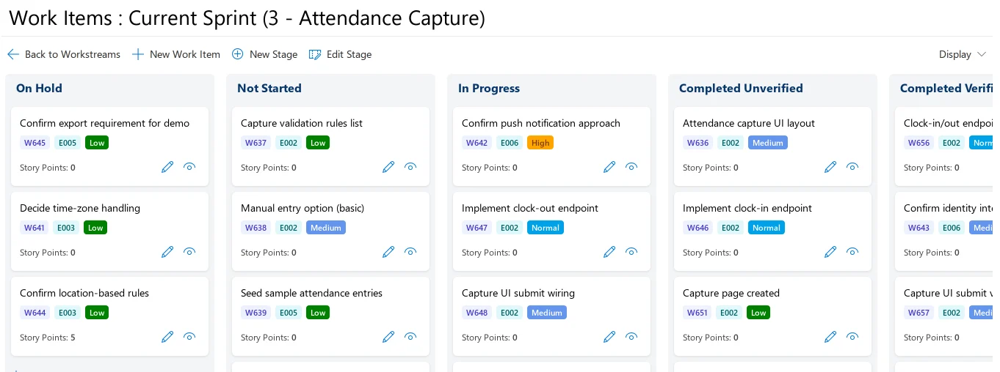
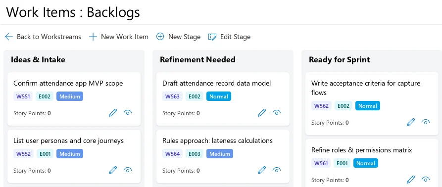
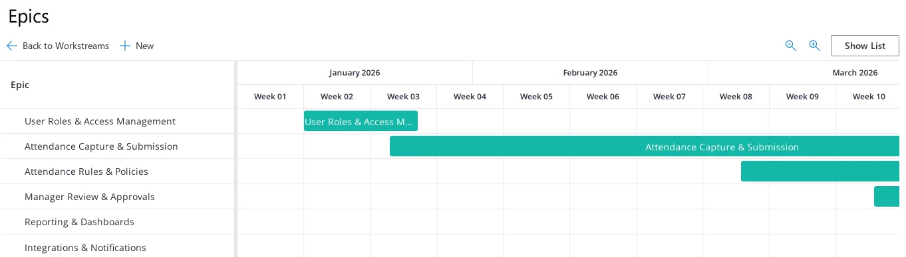

Agile Sprints
Agile Sprints is for delivery teams that work in Scrum. Stories wait in a prioritised backlog, move across a board during each sprint and go into planned releases.


Screens from the ZedX demo, which uses sample data for a college group. Anyone can open the demo without registering. Try the demo yourself
Plan from a prioritised backlog
Epics and user stories sit in a prioritised product backlog. The team estimates each story in story points and picks stories for the next sprint up to its capacity. Everyone can see the scope and the sprint goal before work starts.
The demo backlog has three stages of its own: Ideas & Intake, Refinement Needed and Ready for Sprint.


See how epics overlap
A timeline lays out epics week by week, so the team can see how the bigger pieces of work overlap across sprints. Releases can span several sprints, and each story can be assigned to a planned release version.


Run the sprint, then review it
- Sprint board
- Each sprint has its own board, with stages you can configure. It shows work in progress, finished work and anything blocked.
- Stand-ups and reviews
- Agile Sprints supports daily stand-ups and sprint reviews, and stand-ups can be reported online. Sprint progress updates in real time.
- Metrics
- Completion, velocity and carried-over work for each sprint, with trends across sprints. The official page describes these figures as a way for teams to learn and to estimate better.
- Access
- Role-based permissions decide who can do what.
Using it with other ZedX apps
- Project Portfolios
- Agile Sprints works on its own or linked to Project Portfolios. Leaders then see sprint progress in periodic updates, and the tasks themselves stay with the team. How leaders follow progress
- Group WorkStreams
- Teams that also handle operational and ad-hoc requests can run Group WorkStreams alongside, so that work stays out of the sprint. When work in a workstream needs sprints, the workstream can be linked to Agile Sprints without entering the data twice. About Group WorkStreams
- Sign-in, hosting and licensing
- Agile Sprints runs on the ZedX Apps Platform, with single sign-on through Microsoft Entra ID and role-based permissions. SaaS editions are licensed per user. The Enterprise edition has unlimited users and can run in your own Microsoft Azure account. Sign-in, hosting and licensing
Ask Swiftpro for an Agile Sprints demo
Use the contact form on zedxapps.com. Tell Swiftpro, the company that makes ZedX, how your teams plan and run sprints today, and they’ll get back to you.